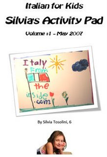

My daughter Silvia has come up with the idea of creating an activity pad for kids who'd like to learn some basic Italian words as well as some facts about Italy. In this fist edition, she included a picture to color, a matching game and a word search puzzle. It's fun and free! Download Silvia's Activity Pad #1 (1.1MB PDF - Requires Adobe Acrobat Reader) Which game do you like the best? Send us your suggestions for upcoming activity pads!